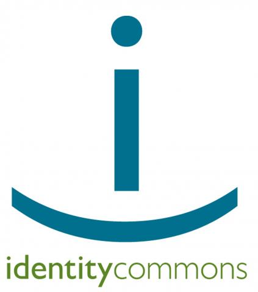

ICF Board Endorses IC3 Proposal

The Information Card Foundation (ICF) has been affiliated with Identity Commons since ICF's founding in June of 2008. Identity Commons is currently a loose-knit affiliation of different groups and organizations working together to create an identity layer for the Internet. It is perhaps best-known for its semi-annual conference, Internet Identity Workshop (now known as “IIW”), which brings together a wide range of people active in the Internet identity community to forge the protocols, policies, and partnerships necessary to produce an identity layer serving all constituencies: people, for-profit companies, non-profit organizations, and governments.
The current Identity Commons is actually the second generation of an organization originally founded by Owen Davis and Andrew Nelson in 2002. That organization subsequently transformed itself in 2005 into the current Working Group structure in order to foster collaboration between a diverse set of groups that include legally incorporated entities such as the ICF, the OpenID Foundation, and XDI.org, as well as internal Identity Commons Working Groups that are not separate legal entities, such as IIW, OSIS, ID Legal, Project VRM, and Kids Online.
Although Identity Commons has always been a non-profit corporation, the second-generation entity has never raised funds beyond its modest operating expenses (less than $5000 per year). This past summer, interest grew in creating a third generation of Identity Commons that could serve as a much more robust “upside-down umbrella” organization for funding and coordinating work across the entire ecosystem of efforts on Internet identity, data sharing, and relationship management.
This effort, codenamed "IC3", has now matured into a formal proposal that has been posted to a public Google Group for discussion and advancement. This group, known as “Bingo” (for alignment of Internet identity organizations), is accessible at http://groups.google.com/group/consolidated-identity.
The ICF board of directors would like to publicly state its support for the IC3 proposal and its intention to become a founding member of IC3 as soon as sufficient commitments are obtained from other founding members and sponsors. We invite you to join the Bingo list and discuss your organization’s interest in IC3 with Mary Ruddy, Chair of the Identity Commons Steward’s Council; Kaliya Hamlin, Identity Commons Chief Evangelist; or Drummond Reed or Joni Brennan, IC3 action team volunteers.